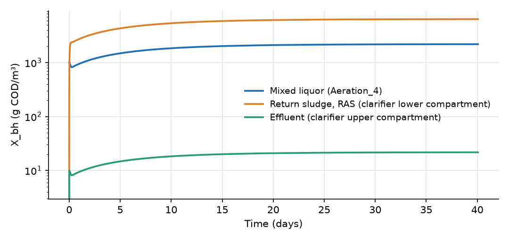
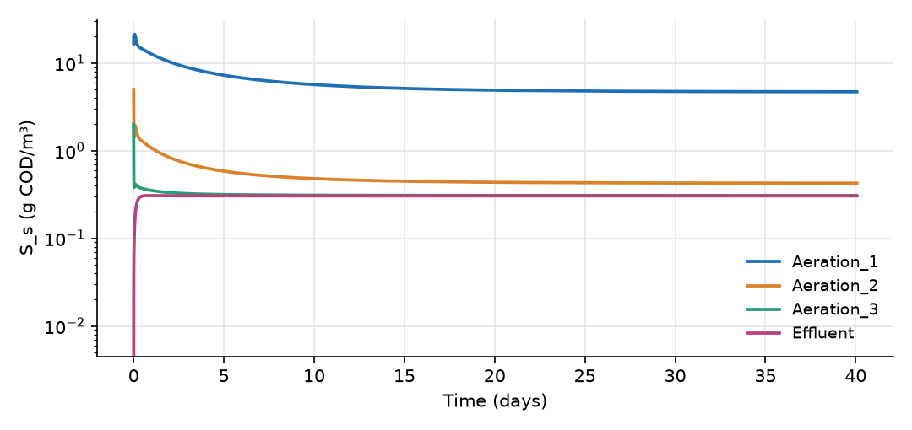

What this model represents
The activated sludge process is the core of most municipal wastewater treatment plants. Wastewater is mixed with a dense suspension of bacteria (the mixed liquor) in aerated tanks, where the bacteria consume the dissolved organic matter and grow. The mixed liquor then flows to a secondary clarifier, where the bacterial flocs settle. Clear water leaves over the top; the thickened sludge at the bottom is mostly returned to the aeration tanks to keep the biomass concentration high, and a small part is wasted to remove the net growth.
This model contains each of those elements with a deliberately small set of state variables (one substrate and one biomass, the core of the IWA Activated Sludge Model No. 1). It shows how the return and waste flows, the clarifier and the growth kinetics combine to set the mixed-liquor concentration and the effluent quality. The plant treats 1000 m³/day, roughly a community of 5000 people, and starts up from a biomass concentration about half of its final value.
How it works
Flows. The influent (1000 m³/day) and the return sludge (500 m³/day) enter Aeration_1. The combined 1500 m³/day passes through the four aeration cells and into the clarifier's upper compartment. The upper compartment discharges 990 m³/day of clarified effluent; the remaining 510 m³/day passes down through the compartment interface (the composite's underflow) and is drawn from the lower compartment as 500 m³/day of return sludge and 10 m³/day of waste sludge. All flows are fixed, so the water volumes stay constant.
Return and waste sludge. The return activated sludge (RAS, link Return_sludge) closes the loop of the activated sludge process. Its recycle ratio is R = Q_RAS/Q_in = 0.5, and the waste activated sludge (WAS, link Waste_sludge_pump) is Q_WAS = 10 m³/day. Two balances follow:
- Mixed-liquor and RAS concentration. Nearly all biomass entering the clarifier leaves through its bottom, so (Q_in + Q_RAS)·X_ml ≈ (Q_RAS + Q_WAS)·X_RAS, or X_RAS/X_ml ≈ (1 + R)/R when Q_WAS is small. With R = 0.5 the return sludge is about three times as concentrated as the mixed liquor. A higher R gives a thinner return sludge and loads the clarifier more; a lower R leaves more sludge in the clarifier.
- Sludge retention time. The biomass that leaves the system is only what is wasted plus what escapes with the effluent: SRT = (biomass in the system) / (Q_WAS·X_RAS + Q_eff·X_eff). Because the RAS returns the rest, the SRT (about 10 days here) is far longer than the hydraulic retention time of the aeration cells, HRT = V/Q_in = 300/1000 day = 7.2 hours. Decoupling the SRT from the HRT is what allows slow-growing biomass to be held in a small tank. At steady state the mixed-liquor concentration follows from the SRT: X_ml ≈ (SRT/HRT)·Y·(S_in − S_s)/(1 + b·SRT), which for SRT = 10 days and HRT = 0.3 day gives about 2000 g/m³, close to the simulated 2200 g/m³ (the decayed biomass that is recycled as substrate accounts for most of the difference).
Kinetics. Two reactions act in every block that holds water, including the clarifier compartments:
| Reaction | Rate | ν for S_s | ν for X_bh |
|---|---|---|---|
| Growth | μ_max·S_s/(K_s + S_s)·X_bh | −1/Y | +1 |
| Decay | b·X_bh | +1 | −1 |
with μ_max = 4 per day, K_s = 20 g/m³, Y = 0.6 and b = 0.1 per day. OpenHydroQual multiplies each rate by the block volume. Growth converts substrate into biomass; the fraction 1 − Y of the consumed COD is oxidized (to CO₂, using oxygen that is not tracked here). Decay returns biomass COD to the substrate, a simplified form of the death-regeneration concept in ASM1.
The two reactions balance when μ_max·S_s/(K_s + S_s) = b·Y, which gives the lowest substrate concentration the biomass can sustain:
S_s* = K_s·b·Y / (μ_max − b·Y) = 20 × 0.06 / 3.94 = 0.30 g/m³
Clarifier. X_bh is a Particle. Across the compartment interface it moves by the downward flow and by settling at v_s·A·C_upper, with v_s = 1500 m/day and A = 100 m². The upper compartment is fully mixed, so the effluent carries the upper-compartment concentration. In a real clarifier a clear-water zone separates the feed from the outlet; to reproduce a realistic effluent of about 20 g/m³ with a single mixed compartment, the settling velocity has to be an effective value far above the 2 to 5 m/hour of real flocs. At steady state the upper compartment concentration is about
X_upper ≈ 1500·X_ml / (990 + 510 + v_s·A) ≈ X_ml/101
S_s is an ordinary dissolved Constituent and passes through the clarifier with the water.
Sludge age. The solids retention time (SRT) is the biomass held in the system divided by the biomass leaving it per day. At day 40 the aeration cells hold 659 kg of biomass COD and the clarifier 196 kg. Each day 64 kg leaves with the waste sludge and 22 kg with the effluent, so the SRT is about 10 days for the whole system (7.7 days counting only the aeration cells). The food-to-microorganism ratio is 1000 × 200 g/day ÷ 659 kg = 0.30 kg COD per kg of biomass COD per day.
What to look for in the results
- Start-up. In the first 5 hours the mixed liquor in Aeration_4 drops from 1000 to about 820 g/m³ while the empty lower compartment of the clarifier fills with settled sludge. From then on the biomass grows, reaching 85% of its final value by day 10 and 2200 g/m³ by day 40. The time scale is set by the sludge age.
- Return sludge. The RAS concentration is about 6400 g/m³, 2.9 times the mixed-liquor concentration. By mass balance on the clarifier, X_RAS ≈ (1500·X_ml − 990·X_effluent)/510.
- Substrate profile. In Aeration_1 the substrate is diluted by the return flow and quickly consumed, giving 4.7 g/m³. It falls to 0.43 g/m³ in Aeration_2 and reaches the floor S_s* = 0.30 g/m³ in Aeration_3 and 4, which is also the effluent concentration. Removal of soluble substrate is 99.8%.
- Effluent solids. The effluent carries 22 g/m³ of biomass COD. This is a quarter of the solids leaving the system each day, so effluent quality also affects the sludge age.
- Process control. Increasing the waste flow lowers the sludge age and the mixed-liquor concentration; decreasing it does the opposite. The effluent substrate hardly changes, because it is pinned at S_s* as long as the sludge age is well above its washout value (roughly 1/(Y·μ_max − b), about half a day).
Assumptions and limitations
- Only soluble substrate and heterotrophic biomass are modeled. Particulate substrate, inert solids, nitrification, oxygen limitation, alkalinity and phosphorus are not; dissolved oxygen is assumed to be non-limiting everywhere.
- Kinetic parameters are typical 20 °C values and are not corrected for temperature.
- The clarifier is two fully mixed compartments with a constant effective settling velocity, with no hindered settling or sludge blanket dynamics. The settling velocity is a calibration parameter for effluent solids, not a measured floc velocity.
- Reactions also run in the clarifier compartments, where biological activity does continue.
- Influent flow and load are constant.
Model diagram
Hover a block or link to see its name and type. Arrows show the positive flow direction.
Components
Click a component to see every property set in the model file, with units and meaning.
Blocks 6
Storage compartments: each holds water (and dissolved or particulate mass) and has a state that evolves in time.
Aeration_1Reactor · mass_transferFirst aeration cell (75 m³). Receives the plant influent, 1000 m³/day with 200 g/m³ of soluble biodegradable COD, and the return sludge. Starts with 1000 g/m³ of biomass.
Reactor: Reactor
| Property | Value | Unit | Meaning |
|---|---|---|---|
| S_s: Concentration | 20 | g/m3 | Computed as mass/(Storage+0.00001) |
| S_s: Constant Inflow concentration | 200 | g/m3 | |
| X_bh: Concentration | 1000 | g/m3 | Computed as mass/(Storage+0.00001) |
| Initial Storage | 75 | m3 | |
| Bottom elevation | 0 | m | |
| Constant Inflow | 1000 | m3/day |
Aeration_2Reactor · mass_transferSecond aeration cell (75 m³).
Reactor: Reactor
| Property | Value | Unit | Meaning |
|---|---|---|---|
| S_s: Concentration | 5 | g/m3 | Computed as mass/(Storage+0.00001) |
| X_bh: Concentration | 1000 | g/m3 | Computed as mass/(Storage+0.00001) |
| Initial Storage | 75 | m3 | |
| Bottom elevation | 0 | m | |
| Constant Inflow | 0 | m3/day |
Aeration_3Reactor · mass_transferThird aeration cell (75 m³).
Reactor: Reactor
| Property | Value | Unit | Meaning |
|---|---|---|---|
| S_s: Concentration | 2 | g/m3 | Computed as mass/(Storage+0.00001) |
| X_bh: Concentration | 1000 | g/m3 | Computed as mass/(Storage+0.00001) |
| Initial Storage | 75 | m3 | |
| Bottom elevation | 0 | m | |
| Constant Inflow | 0 | m3/day |
Aeration_4Reactor · mass_transferFourth aeration cell (75 m³). Its mixed liquor flows to the clarifier. The four cells together (300 m³, 7.2 hours of hydraulic retention at the influent flow) approximate a plug-flow aeration basin.
Reactor: Reactor
| Property | Value | Unit | Meaning |
|---|---|---|---|
| S_s: Concentration | 1 | g/m3 | Computed as mass/(Storage+0.00001) |
| X_bh: Concentration | 1000 | g/m3 | Computed as mass/(Storage+0.00001) |
| Initial Storage | 75 | m3 | |
| Bottom elevation | 0 | m | |
| Constant Inflow | 0 | m3/day |
Effluentfixed_headFixed-head boundary that receives the clarified effluent. The effluent quality is read from the clarifier's upper compartment.
fixed_head: Fixed-head boundary
| Property | Value | Unit | Meaning |
|---|---|---|---|
| Initial Storage | 100000 | m3 | |
| Head | 0 | m |
Waste_sludgefixed_headFixed-head boundary that receives the wasted sludge.
fixed_head: Fixed-head boundary
| Property | Value | Unit | Meaning |
|---|---|---|---|
| Initial Storage | 100000 | m3 | |
| Head | -2 | m |
Composite blocks 1
Pre-assembled groups of blocks and links that behave as a single unit.
ClarifierClarifier · wastewaterA Clarifier composite with 100 m² of plan area: an upper (clarification) compartment of 200 m³ above a lower (thickening) compartment of 30 m³. Mixed liquor enters the upper compartment; biomass settles into the lower one, from which the sludge is drawn. Its underflow of 510 m³/day equals the return plus waste flow.
Clarifier composite with 100 m² of plan area: an upper (clarification) compartment of 200 m³ above a lower (thickening) compartment of 30 m³. Mixed liquor enters the upper compartment; biomass settles into the lower one, from which the sludge is drawn. Its underflow of 510 m³/day equals the return plus waste flow.Clarifier: A two-compartment secondary clarifier. Influent attaches to the upper compartment, clarified water leaves it through an 'Effluent flow' link, and return and waste sludge are drawn from the lower compartment through 'Sludge flow' links.
| Property | Value | Unit | Meaning |
|---|---|---|---|
| S_s: Concentration | 1 | g/m3 | Computed as mass/(Storage+0.00001) |
| X_bh: Concentration | 10 | g/m3 | Computed as mass/(Storage+0.00001) |
| Elevation of the clarifier floor | -1 | m | Bottom of the lower compartment. |
| Elevation of the interface between the two compartments | 0 | m | Bottom of the upper compartment. |
| Initial volume of water in the lower compartment | 30 | m3 | |
| Cross-sectional area of the compartment interface | 100 | m2 | Plan area over which solids settle from the upper compartment into the lower one. |
| Flow drawn from the upper into the lower compartment | 510 | m3/day | Total underflow, i.e. the sum of the return and waste sludge streams leaving the lower compartment. |
| Initial volume of water in the upper compartment | 200 | m3 |
Links 7
Connections that move water (and the mass it carries) between blocks.
Mixed_liquor_1Fixed flow · wastewaterFixed flow of 1500 m³/day (influent plus return) from Aeration_1 to Aeration_2.
Fixed flow: Fixed flow
| Property | Value | Unit | Meaning |
|---|---|---|---|
| Flow rate | 1500 | m3/day | Flow rate |
Mixed_liquor_2Fixed flow · wastewaterFixed flow of 1500 m³/day from Aeration_2 to Aeration_3.
Fixed flow: Fixed flow
| Property | Value | Unit | Meaning |
|---|---|---|---|
| Flow rate | 1500 | m3/day | Flow rate |
Mixed_liquor_3Fixed flow · wastewaterFixed flow of 1500 m³/day from Aeration_3 to Aeration_4.
Fixed flow: Fixed flow
| Property | Value | Unit | Meaning |
|---|---|---|---|
| Flow rate | 1500 | m3/day | Flow rate |
To_clarifierFixed flow · wastewaterFixed flow of 1500 m³/day from Aeration_4 to the clarifier.
Fixed flow: Fixed flow
| Property | Value | Unit | Meaning |
|---|---|---|---|
| Flow rate | 1500 | m3/day | Flow rate |
Clarified_effluentEffluent flow · wastewaterEffluent flow of 990 m³/day from the clarifier's upper compartment.
Effluent flow: Effluent flow
| Property | Value | Unit | Meaning |
|---|---|---|---|
| Flow rate | 990 | m3/day | Flow rate of the clarified effluent. Behaves exactly like a fixed flow; the separate type is what lets a Clarifier draw effluent from its upper compartment while sludge leaves the lower one. |
Return_sludgeSludge flow · wastewaterThe return activated sludge (RAS) line: a Sludge flow of 500 m³/day pumping thickened sludge from the clarifier's lower compartment back to the head of Aeration_1. The recycle ratio is R = Q_RAS/Q_in = 500/1000 = 0.5. The RAS returns the settled biomass to the aeration cells and is what keeps the mixed-liquor concentration far above what growth on the influent alone could sustain.
Sludge flow: Sludge flow
| Property | Value | Unit | Meaning |
|---|---|---|---|
| Flow rate | 500 | m3/day | Flow rate of the sludge stream. Behaves exactly like a fixed flow; the separate type is what lets a Clarifier route return and waste sludge out of its lower compartment while influent and effluent attach to the upper one. |
Waste_sludge_pumpSludge flow · wastewaterThe waste activated sludge (WAS) line: a Sludge flow of 10 m³/day (1% of the influent flow) from the lower compartment to the Waste_sludge boundary. Wasting removes the net biomass growth and sets the sludge retention time.
Sludge flow: Sludge flow
| Property | Value | Unit | Meaning |
|---|---|---|---|
| Flow rate | 10 | m3/day | Flow rate of the sludge stream. Behaves exactly like a fixed flow; the separate type is what lets a Clarifier route return and waste sludge out of its lower compartment while influent and effluent attach to the upper one. |
Constituents 2
Substances or particles carried by the water.
S_sConstituentReadily biodegradable soluble substrate, as COD (g/m³).
Constituent: Chemical constituent
| Property | Value | Unit | Meaning |
|---|---|---|---|
| Concentration | 0 | g/m3 | Computed as mass/(Storage+0.00001) |
| Constant Inflow concentration | 0 | g/m3 | |
| Diffusion Coefficient | 0 | m2/day | |
| Dispersivity | 0 | m | |
| Stoichiometric Constant | 0 |
X_bhParticleActive heterotrophic biomass, as COD (g/m³). A Particle, so it settles in the clarifier with an effective settling velocity of 1500 m/day.
Particle, so it settles in the clarifier with an effective settling velocity of 1500 m/day.Particle: Solid Particle
| Property | Value | Unit | Meaning |
|---|---|---|---|
| Concentration | 0 | g/m3 | Computed as mass/(Storage+0.00001) |
| Constant Inflow concentration | 0 | g/m3 | |
| Settling velocity | 1500 | m/day | |
| Stoichiometric Constant | 0 | ||
| Turbidity Coefficient | 0 | ||
| Turbidity Exponent | 0 |
Reaction parameters 4
Named coefficients used in reaction rate expressions.
mu_maxReactionParameterMaximum specific growth rate of the heterotrophs (1/day).
ReactionParameter: Reaction Parameter
| Property | Value | Unit | Meaning |
|---|---|---|---|
| Arrhenius temperature correction factor | 1 | ||
| Value | 4 | ||
| Reference Temperature | 20 |
K_sReactionParameterHalf-saturation concentration of the substrate (g COD/m³).
ReactionParameter: Reaction Parameter
| Property | Value | Unit | Meaning |
|---|---|---|---|
| Arrhenius temperature correction factor | 1 | ||
| Value | 20 | ||
| Reference Temperature | 20 |
YReactionParameterYield: grams of biomass COD formed per gram of substrate COD consumed.
ReactionParameter: Reaction Parameter
| Property | Value | Unit | Meaning |
|---|---|---|---|
| Arrhenius temperature correction factor | 1 | ||
| Value | 0.6 | ||
| Reference Temperature | 20 |
bReactionParameterBiomass decay rate (1/day). The decayed biomass is returned to the substrate pool.
ReactionParameter: Reaction Parameter
| Property | Value | Unit | Meaning |
|---|---|---|---|
| Arrhenius temperature correction factor | 1 | ||
| Value | 0.1 | ||
| Reference Temperature | 20 |
Reactions 2
Transformations among constituents, each with a stoichiometry and a rate expression.
GrowthReactionMonod growth of biomass on substrate, rate μ_max·S_s/(K_s + S_s)·X_bh. Consumes 1/Y grams of substrate per gram of biomass formed.
Reaction: Chemical reaction
(mu_max*S_s/(S_s+K_s)*X_bh)| Constituent | Stoichiometric coefficient |
|---|---|
| S_s | (0-1/Y) |
| X_bh | 1 |
DecayReactionFirst-order decay of biomass, rate b·X_bh, converting biomass COD back to substrate COD.
Reaction: Chemical reaction
(b*X_bh)| Constituent | Stoichiometric coefficient |
|---|---|
| S_s | 1 |
| X_bh | -1 |
Simulation settings
| Start time | 0 |
| End time | 40 |
| Initial time step | 0.001 |
| Write interval (steps) | 10 |
Results
Produced by running the downloaded model unchanged.

